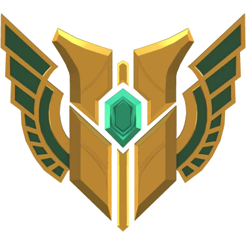

NIVEL
MAESTRIA 7
"Fique atrás de mim, demaciano! Você pode não ter percebido, mas sou bem grande."
Galio
Na fronteira da reluzente Grande Cidade de Demacia, Galio, o colosso de pedra, segue vigilante. Construído como escudo contra magos inimigos, ele muitas vezes permanece imóvel por décadas até que a presença de uma magia poderosa o desperte. Quando despertado, Galio aproveita bem seu tempo, deleitando-se com a emoção do combate e com a grande honra de defender seus compatriotas. Mas seus doces triunfos deixam um gosto amargo, pois a magia que ele destrói é a mesma que o movimenta e, após cada vitória, ele volta à inércia.
FUNÇÃO
MAGO/TANK